Abstract
引用表达式理解 (Referring expression comprehension)：定位图像中的目标对象，该图像由用自然语言表达的引用表达式描述。
方法根据机制，分为编码视觉（visual）和文本（textual）模式。
本文特别研究了将图像和表达式联合嵌入到公共特征空间的常用方法。
Introduction
引用表达式通常与三个任务相关联：生成、分割和理解
引用表达式生成（REG）：生成对图像中对象的判别描述。
- 这有点像给图像添加字幕。但与添加字幕不同的是，REG更具体地针对图像中的对象或区域，且具有明确定义的评估指标：它需要明确地描述对象，以便系统轻松理解描述并推断定位图像中的正确区域。
引用表达式分割（RES）：根据引用表达式对引用对象进行分割。
- 传统的解决方案是将语言编码器嵌入到分割网络中，学习一个多模态张量以对分割掩码（segmentation mask）进行解码。
引用表达式理解（REC）：REG的逆向任务，基于表达式定位图像中的对象，从一组区域建议中选择最佳区域。
REC困难的原因
- 表达式长度可能会很长，需要处理更多信息，可能需要更多的推理步骤
- 图像是高维的，比纯文本更加嘈杂（noisier）
- 图像缺乏语言的结构和语法规则，没有像NLP任务中能够使用的如语法分析器等有效方便的工具
类似REC的任务
- Visual Grounding：定位图像中的多个对象区域，这些区域对应于描述底层场景的句子中的多个名词短语。而引用表达式理解的目标是通过给定表达式找到最佳匹配区域。
- Object Detection：目标检测使用预定义类别标签对固定对象进行分类，而REC使用自然语言表达式来引用对象。自然语言表达的方式更加实用，因为它会根据图像和文本的信息而变化，更适合实际应用场景。
- REC的关键点：利用语言信息来区分目标对象和其他对象，尤其是同一类别的对象。
REC要求模型充分理解文本信息中的自然语言表达，从而得到目标和关系。因此表达式和目标之间的匹配非常重要
本文结构
- 概述
- 七类REC方法
- 联合嵌入方法
- 基于模块的方法
- 基于图的方法
- 使用外部解析器的方法
- 弱监督方法
- 一阶段方法
- 视觉语言预训练方法
- 当前可用的 REC 数据集和用于引用表达式的评估指标
- REC 未来可能的方向
Methods
现有方法概述图
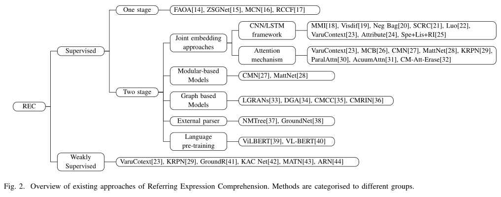
Joint embedding approaches
动机：执行REC的第一步是将图像区域和引用表达式编码到相同的向量空间中，对于图像的表示，CNN可以通过将输入图像嵌入到固定长度的向量中来生成丰富的图像表示以用于视觉任务。对于文本表示，LSTM被广泛用于句子特征编码。
方法：
-
生成任务中用预训练的CNN对图像中的目标对象以及上下文进行建模，将其作为输入提供给LSTM进行生成。
-
理解任务中LSTM将区域级的CNN特征图和一个词向量作为输入，在每个时间步的目标是最大化给定参考区域的表达可能性。
-
Mao et al. [18]利用 CNN 模型从边界框，利用LSTM 网络中提取视觉特征来生成表达式。利用最大似然训练，其中引用表达的概率仅在参考区域高，在所有其他区域低。提出了一种最大互信息（MMI）方法，如果生成的参考表达式也可以由图像中的其他对象生成，则模型将受到惩罚。这同时解决了逆问题：根据表达式定位图像中的目标（引用表达式理解）。
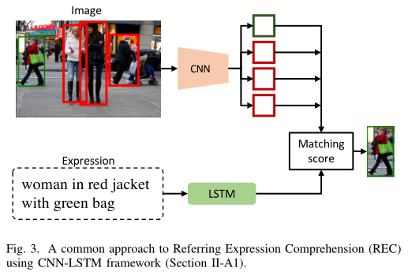
-
Yu et al. [19]引入了视觉比较方法（Visdif）来将目标物体与周围物体区分开来，而非提取整个图像的CNN特征。Visdif专注于目标类型和表达式之间的关系，利用对象之间的视觉差异来表示视觉上下文以提升性能。这是重要的，因为生成过程中必须考虑相似对象的视觉特征，以便选择最不同的方面进行描述。
-
Nagaraja et al. [20] 将【18】的工作进行了拓展，能够通过多实例学习（MIL）来学习上下文区域（ since annotations for context objects are generally not available for training.）他们使用 MIL 对象函数来训练 LSTM，整个图像也被视为潜在的上下文区域。输入词嵌入和区域特征，以及整个图像的 CNN 特征和边界框特征作为上下文。使用 LSTM 将引用表达式的概率建模为区域和上下文区域的函数，将引用表达式映射到区域及其支持的上下文区域。这两个训练目标函数的公式类似于 MISVM 和 mi-SVM [48]。
-
Hu et al. [21] 提出了一种新的空间上下文循环卷积网络（SCRC）模型。该模型以自然语言查询、局部图像描述符、空间配置和全局场景级上下文作为输入，对候选区域的输出进行评分。受长期递归卷积网络（LRCN）的启发，SCRC 采用双层 LSTM 网络结构，其中嵌入的文本序列和视觉特征作为第一层和第二层的输入。由于数据集中缺少带解释的对象边界框和描述对，SCRC 对图像字幕域进行预处理，然后将其适应自然语言对象检索域，从而可以将视觉语言知识从之前的任务中迁移出来可以在后面的任务中转移。通过这种预训练和自适应的过程可以改进性能，避免过拟合。
-
Luo et al. [22] 利用学习的理解模型来指导模型生成更好的引用表达。理解模块对人工生成的表达式，通过代理方法进行训练。代理方法的训练受到生成对抗网络 [49]、[50] 中的生成器-判别器结构的启发。然后他们使用生成和重新排序管道，其中理解模型充当“批评者”来判断表达式是否可以正确引用。具体而言，这一过程首先生成候选表达式，然后根据理解任务的表现选择最佳表达式。
-
Zhang et al. [23] 提出了一种称为变分上下文（VC）的变分贝叶斯方法，适用了所指对象和上下文之间的关系。无论是referent还是context都会影响对另一个的后验分布的估计，因此context的搜索空间会减少。对于每个区域，VC 估计一个粗略的上下文，这将有助于细化所指对象的真实定位。变分下界可以通过参考和上下文之间的交互来解释：给定它们中的任何一个都可以帮助定位另一个，因此它有望降低上下文的复杂性。与正式的基于 MIL 的方法相比，VC 使用该框架来近似具有弱监督的组合上下文配置。
-
总结：
- “VisDif”训练了一个 Fast-RCNN 检测器并在此基础上进行实验。结果表明，这种相关对象的组合比以前的工作产生了更好的结果，以减少生成过程中的歧义。一个弱点是该模型依赖于检测性能。
- Nagaraja 的工作【20】表明对象之间的上下文建模提供了比仅建模对象属性更好的性能。他们的模型可以识别参考区域及其支持上下文区域。“SCRC”方法有效地利用了局部和全局信息，在 ReferItGame 数据集和 Flickr30K 实体数据集上比以前的基线方法显着提高了性能。结果表明，空间配置和全局上下文的结合可以提高性能。
- 罗的工作【22】改进了多个基准数据集上的引用表达式生成。“VaruContext”还将模型扩展到无监督设置，在 ReferItGame 上的性能有所提高。在各种基准上进行的大量实验表明，在有监督和无监督设置中，过去的方法都在不断改进。
优缺点
- 优点：简洁有效
- 缺点：受到单一向量表示的限制，这些表示忽略了复合语言表达以及图像中的复杂结构。它们按顺序对表达式进行编码，而忽略表达式中的依赖关系。
Attention mechanism
动机：允许在处理大量信息时专注于输入的某一部分。注意力机制能够在视觉和文本信息之间建立元素连接，以便在对文本中的每个单词进行编码时可以利用来自某些特定图像区域（即感兴趣区域）的信息，反之亦然，从而在语义上得到丰富的视觉和文本表示。
方法：
- Zhuang et al. [30] 提出了一种并行注意 (PLAN) 方法，该方法在图像级和区域级包含两个并行注意过程推理。给定一个引用表达式，图像级注意力模块通过反复关注不同的图像块来编码整个全局信息和引用语言描述，这允许模型利用相关的上下文信息。而区域级注意模块根据语言信息反复关注对象建议，并获得每个建议的表示。然后，将全局图像和目标提议的表示放入匹配模块中，以计算每个目标提议的匹配概率。
- Deng et al. [31] 将 REG 制定为三个连续的子任务，即 1）确定查询中的主要焦点； 2）理解图片中的概念； 3）定位最相关的对象，他们提出了一种累积注意力（AccumAtt）机制来共同解决这三个任务。具体来说，AccumAtt 采用了三个注意力模块来分别处理上述三个子任务中的注意力问题。为了捕捉这些注意力问题之间的相关性，AccumAtt 进一步采用累积过程将所有类型的注意力组合在一起并循环提炼它们，其中每种类型的注意力将在计算其他两种注意力时用作指导。最后，AccumAtt 计算每个对象建议的参与表示与来自查询和图像注意模块的细化表示之间的匹配分数，以定位目标对象。
- 注意力机制能够与其他模型相集合，如后面的介绍的模块化网络、图模型等。
优缺点
- 优点：通过在CNN-LSTM框架上应用注意力机制，AccumAtt [31] 和 PLAN [30] 在主流数据集上都取得了显著进步。PLAN 中的实验验证了在多个级别（即区域级别和图像级别）执行注意力的重要性。此外，AccumAtt 的消融研究显示了使用多个注意力模块来处理不同模式并累积多轮注意力分数的有效性。此外，这两种方法的可视化结果也为理解注意力过程提供了有价值的解释。
- 缺点：这些基于注意力的方法不能保证正确的注意力分配，因为数据集通常没有提供相应的解释。
Modular-based Models
动机：模块化网络已经成功应用于许多任务。在引用表达式的任务中，以前的工作主要简单地将所有特征连接起来作为输入，并使用单个 LSTM 对整个表达式进行编码或解码，而忽略了表达式中提供的不同信息之间的差异。在早期的工作中，expression parsing with attention需要适用外部语言解析器 [56] 进行分解，但近期的研究建议学习端到端分解。通过将表达式分解为不同的组件，并通过模块化网络将每个组件与对应的视觉区域进行匹配，从而实现一步推理。框架图如下
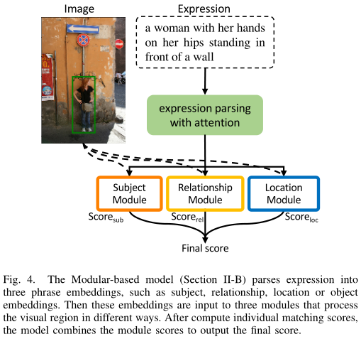
方法：
- Hu et al. [27] 提出了组合模块化网络 (CMN)，它可以端到端地学习语言分析和视觉推理。 CMN由定位模块和关系模块组成。定位模块将主题或对象与每个图像区域匹配并返回一元分数。关系模块将关系与一对区域匹配并返回成对分数。给定一张图像和一个表情，CMNs首先将表情解析为具有软注意力的主题、关系和对象。然后将这两个模块结合起来考虑区域的局部特征和区域之间的相互作用。
- Yu et al. [28] 提出了模块化注意力网络（MAttNet）。 MAttNet 将自然语言表达分解为三个模块化元素，这些组件与主题外观、位置和与其他对象的关系有关。主题模块处理类别、颜色和其他属性，位置模块处理绝对和相对位置，关系模块处理主题对象关系。每个模块都有不同的结构，在自己的模块空间中学习参数而不影响其他模块。 MAttNet 不依赖外部语言解析器，而是通过基于软注意力的机制学习自动解析表达式。然后计算三个视觉模块的匹配分数来衡量对象和表达式之间的兼容性。
- Liu et al. [32] 提出了一种跨模态注意力引导擦除（CM-Att-Erase）策略，用于训练参考表达理解模型。 CM-Att-Erase 采用 MAttNet 作为其骨干模型。通过在训练期间从文本或视觉信息中删除参与度最高的部分，CM-Att-Erase 鼓励模型发现更多用于视觉-文本对齐的潜在线索，从而实现全面的跨模态对应。此外，CM-Att-Erase 对每个模块的设计进行了多次修改。具体来说，与 MAttNet 仅采用文本信息来学习单词级注意力和模块级注意力不同，CM-Att-Erase 进一步考虑了全局图像特征。此外，CM-Att-Erase 将位置和关系模块制定为具有句子感知注意力的统一结构，该结构考虑多个上下文对象，并关注最重要的对象。CM-Att-Erase 提出了一种基于注意力的擦除过程，通过丢弃来自文本或视觉域的最主要信息，以在线生成困难的训练样本，并驱动模型发现互补的文本-视觉对应关系。这个过程鼓励模型探索更难的例子，消除数据集偏差。
优缺点：
- 优点：在 RefCOCOg 数据集上的实验表明，虽然是弱监督，但 CMN 不仅可以正确定位主题区域，而且可以为对象实体找到合理的区域。MAttNet 具有显着的优越性能，在边界框的定位上实现了约 10% 的改进，像素分割精度几乎翻了一番。CM-Att-Erase 在 MAttNet 之上又在RefCOCO/+/g数据集的真实对象建议和检测对象建议上取得了显著进步。在没有跨模态擦除训练策略的情况下，它仍然明显优于 MAttNet。基于模块化的模型（例如 CM-Att-Erase）比更复杂的方法（例如基于图形的模型）取得了更好的结果。这表明该系统在现有数据集有限的情况下无需复杂的推理过程即可获得良好的性能。
- 缺点：CMN 依赖于有限的句法信息，并且由于缺乏对语言递归的建模，无法追踪多个支持的对象。模块化网络过度简化了语言结构并忽略了视觉对象之间的关系。换言之，语言和区域特征是在彼此不了解的情况下独立学习或设计的，这使得两种模式的特征难以相互适应，尤其是在复杂表达的情况下。因此，当表达式过于复杂时，此方法不适用。
Graph based models
动机：对于引用表达式任务，解决这个问题的关键是学习一个能够适应所用表达式的区分对象特征。为了避免歧义，这个表达式通常不仅描述对象本身的属性，还描述对象与其邻居之间的关系。以前的方法只处理对象，或者只研究对象之间的一阶关系，而不考虑表达式的潜在复杂性。因此，提出了基于图的方法，其中节点可以突出显示相关对象，而边缘则用于识别表达式中存在的对象关系。因为图注意力可以在图上建立参考和其他支持线索，所以参考表达决策可以是可视的和可解释的，如下图。
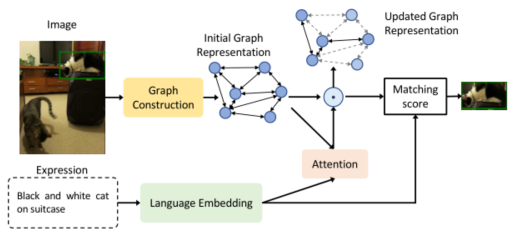
方法
- Wang et al. [33] 提出了一种语言引导的图注意力网络（LGRAN）。该网络由三个模块组成：语言自注意力模块、语言引导图注意力模块和匹配模块。语言自注意力模块采用自注意力方法分解描述主体、类内关系和类间关系三部分的表达，学习相应的表示。语言引导的图注意模块，构造一个有向图的候选对象，强调节点、类内边和类间边，最终得到每个对象的三种表达相关的表示。匹配模块计算表达式到对象的匹配分数。LGRAN可以在参与图的基础上动态丰富对象表示，以更好地适应引用表达式。
- Yang et al. [34] 提出了一个动态图注意网络（DGA），它可以对图像和表情之间的交互进行多步推理。给定一个表达式和图像，DGA 构建图像中对象的图，其中节点和边对应于对象和关系，然后将表达式的语言表示合并到图中。之后，分析器通过探索表达式的语言结构来学习推理的语言指导。在预测的视觉推理过程的指导下，DGA 在图上逐步进行动态推理。视觉推理过程是由组成表达式组成的序列。最后，DGA 计算复合对象和引用表达式之间的匹配分数。
- Liu et al. [35] 利用语言引导的图形表示来捕获全局上下文及其接地对象的相互关系。此外，他们还提出了一种名为 CMCC 的上下文感知跨模态图匹配策略。CMCC由四个主要模块组成：主干网络提取基本语言和视觉特征，短语图网络对句子描述中的短语进行编码，视觉对象图网络计算对象建议特征，图相似度网络预测短语和对象之间的全局匹配建议。
- Yang et al. [36] 提出了一个跨模态关系推理网络（CMRIN），它包含一个跨模态关系提取器（CMRE）和一个门控图卷积网络（GGCN）。 CMRE 自适应地提取所有需要的信息，以构建具有跨模态注意力的语言引导视觉图。 GGCN 融合来自不同模式的信息并传播多模式信息以计算语义上下文。
优缺点
- 优点：LGRANs 使参考表达决策既可视化又可解释。在RefCOCO/+/g上的结果具有一定的优势。DGA实验结果表明，该方法不仅可以显着超越现有的所有算法，而且为复杂语言描述中物体的逐步定位提供了视觉证据。 CMCC 采用两阶段策略训练整个图神经网络，并在 Flickr30K 实体基准上对其进行评估，达到了SOTA，并以较大优势超越了其他方法。
- 缺点：本文未提及
External parser
动机：引用表达式利用目标对象的辨别特征及其与其他对象的相对位置来消除目标对象的歧义。引用表达式的语言结构与引用表达式的解析过程之间存在对应关系。但现有方法过度简化了语言的复合性质，将其简化为单个句子，或主语、谓语和宾语短语的综合分数。尽管其中一些使用词汇级别的注意力机制来关注信息语言部分，但与人类级别的推理相比，它们的推理仍然很粗糙。更严重的是，这个粗略的基础分数很容易偏向于学习某种视觉语言模型而不是视觉推理。这个问题在许多端到端视觉语言嵌入框架中使用的其他任务中反复发现，例如 VQA 和图像字幕。因此，借助外部语言解析器，基于语法的方法可以帮助定位表达式中提到的目标对象和辅助支持对象。如下图
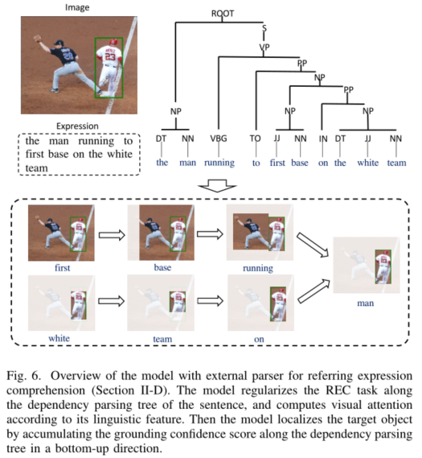
方法
- Cirik et al. [38] 提出了GroundNet，这是第一个使用外部句法分析来解析输入参考表达式的方法，它有助于目标对象和辅助支持对象的定位。当给定输入表达式的解析树时，它们将树中出现的句法组件和关系显式映射到由神经模块组成的组合图，该图定义了执行定位的架构。
- Liu et al. [37] 开发了一个神经模块树网络（NMTree），它在自然语言句子的依赖解析树（DPT）[57]中积累了基础置信度来定位目标区域。给定一个自然语言表达式作为输入，他们首先通过 Dependency Parsing Tree、Bidirectional Tree LSTM 和 Module Assembler 将其转换为 NMTree。 NMTree由三个简单的神经模块组成：叶子和根的Single，内部节点是Sum和Comp。每个模块计算一个grounding score并以自下而上的方式累积。最终结果grounding score是根节点的输出分数。
优缺点
- 优点：与之前的研究相比，GroundNet 具有更好的可解释性。首先，它可以确定引用表达点的哪个短语指向图像中的哪个对象，其次，它可以跟踪网络如何确定目标对象的位置。 GroundNet 在目标对象的定位方面保持了相当的性能。定性结果和人工评估表明，NMTree 理解更细粒度和可解释的语言复合推理，并具有更好的性能。
- 缺点：使用解析器处理和转换表达式时，可能会删除一些限定词，而这些词汇（例如名词的不定性）可能有助于确定对象。
Vision-Language pre-training
动机：视觉语言推理需要理解【视觉内容】、【语言语义】以及【跨模态对齐和关系】。该领域的主要策略是使用【专门为视觉或语言任务设计】并在【大规模视觉或语言数据集】上进行【预训练】的单独的【视觉】和【语言】模型，但是缺乏统一的基础来学习视觉概念之间的联合表示和语言语义，当配对的视觉语言数据有限或有偏差时，通常会导致泛化能力差。因此，拥有一个联合预训练的视觉和语言模型来为下游视觉和语言任务提供统一的知识表示可能是有益的。如下图
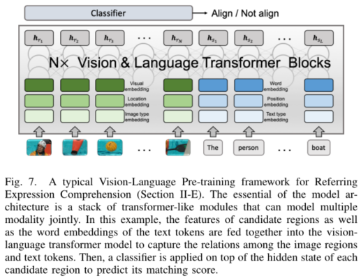
方法
- Lu et al. [39] 提出 ViLBERT 框架在大规模视觉语言数据集上执行视觉和语言信息的联合建模，并利用预训练模型来解决包括引用表达理解在内的多种视觉语言任务。具体来说，ViLBERT 包含两个分支，一个用于语言信息，另一个用于视觉信息。每个流由两个不同的层组成：Transformer Layer (TRM) 和提议的 Co-Attentional Transformer Layer (Co-TRM)，后者用于连接两个分支。为了学习联合视觉语言表示，ViLBERT 首先通过预训练对象检测器获得输入图像中的一组对象建议。然后，Co-TRM 层计算每个对象提议和输入文本中每个标记之间的交叉模态注意力分数。预训练是在概念字幕上执行的，概念字幕是一个包含 300 万个图像字幕对的大规模图像字幕数据集。使用了两个预训练任务：1）Masked Multi-modal Learning，其中模型必须在给定观察输入的情况下重建图像区域类别或掩码输入的单词； 2）多模态对齐预测，其中模型必须预测标题是否描述了图像内容。在对引用表达理解任务进行微调时，他们只需将每个图像区域的最终表示传递到一个学习的线性层以预测匹配分数。
- 与 ViLBERT 不同，ViLBERT 对不同的输入模态采用单独的分支，并交替执行跨模态注意和自注意以获得联合表示，Su et al. [40] 提出在一个名为 VL-BERT 的统一单分支框架中处理图像和文本输入。在 VLBERT 中，图像中的每个 object proposal 或文本中的每个单词都被视为输入 token 进入一堆 Transformer Layers，它学习在所有类型的 token 之间建立连接，没有任何限制，从而实现 co-attention 和 self -注意力是同时进行的。和 ViLBERT 一样，VL-BERT 的预训练也是在 Conceptual Captioning 上进行的，而 VL-BERT 仅采用 Masked Multimodal Learning 作为预训练任务。在对引用表达理解任务进行微调时，VL-BERT 遵循与 ViLBERT 相同的策略。
优缺点
- 优点：通过视觉和语言预训练，ViLBERT 和 VL-BERT 在 RefCOCO+ 数据集上实现了最佳性能，并大大优于以前的最先进结果。
- 缺点：模型太大了，需要大量计算资源
One stage approaches
动机：大多数引用表达理解方法都遵循一个常见的两阶段管道：i）使用像 Faster RCNN 这样的对象检测器来根据输入图像生成一组对象建议； ii) 计算每个建议和引用表达式之间的匹配分数，然后采用得分最高的建议作为模型预测结果。然而，这些两阶段解决方案有两个需要注意的问题。首先，对象检测阶段引入了额外的计算。此外，由于在阶段i中通常会生成数十甚至数百个proposal，需要大量计算来提取所有检测到的object proposal的特征，这使得实时引用表达理解不可行。其次，在第 i 阶段获得的对象建议的质量会严重影响最终的性能。生成的建议与真实对象之间通常存在很多错位，这可能会阻碍阶段 ii 的学习过程。更关键的是，目标检测器甚至可能在第 i 阶段错过目标（这很常见），在这种情况下，第 ii 阶段实际上是在浪费时间，因为 VG 任务永远不会成功。如下图
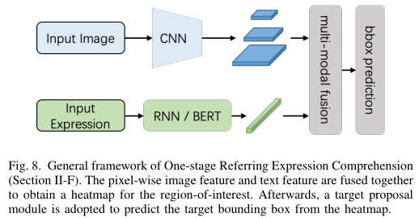
方法
- Yang et al. [14] 发了一种基于 YOLOv3 [58] 的单阶段引用表达理解方法（FAOA）。他们通过 Darknet [58] 从图像中获取特征金字塔，并通过 BERT 从引用表达式中提取语言特征。然后，对于图像特征金字塔中的每一层，将语言特征和图像特征连接在一起，并馈入预测头，以预测目标对象的边界框。为了使模型具有位置感，由像素的归一化坐标组成的空间特征也被输入到预测头中。
- Sadhu et al. [15] 提出了一种将检测网络和接地系统结合在一起的零样本Grounding (ZSG) 方法。与[14]不同的是，他们采用带有FPN的ResNet来提取图像特征金字塔，并使用Bi-LSTM来提取语言表示。此外，他们没有采用二元交叉熵，而是采用 Focal Loss 对目标对象内部/外部的区域进行分类。
- Luo et al. [16] 提出了一种多任务协作网络（MCN），它在一个阶段的管道中共同解决了引用表达理解和引用表达分割。具体来说，他们试图通过 1）一致性能量最大化来解决两个引用表达任务之间的预测冲突问题，这迫使两个任务在输入图像上具有相似的注意力； 2) Adaptive Soft Non-Located Suppression，根据引用表达式理解分支中的预测，软抑制引用表达式分割分支中无关区域的响应。
- Liao et al. [17] 提出了一种实时跨模态相关过滤方法 (RCCF)，将引用表达理解任务重新表述为相关过滤过程。 RCCF 计算参考对象和图像之间的相关图以预测对象中心。
优缺点
- 优点：与两阶段参考表达理解方法相比，一阶段方法具有明显更快的推理速度。事实上，两阶段方法中最耗时的部分是目标提议的生成和它们的特征提取，而在单阶段方法中，这两个步骤不是必需的，从而导致了一个数量级的加速。此外，FAOA 和 MCN 通过几个强大的两阶段基线（包括先前最先进的模型 MAttNet）实现了具有竞争力甚至更好的性能。
- 缺点：本文未提及
Weakly supervised
动机：传统上，以监督方式训练引用表达模型需要大量手动解释来指示输入表达和对象之间的映射。此外，监督模型只能在有限的训练数据中处理某些类型的接地，不能满足实际应用的需要。因此，希望在没有或很少监督的情况下从数据中学习。弱监督参考表达是指在训练阶段参考对象与查询之间的映射未知时，根据语言查询在图像中定位对象，如下图。
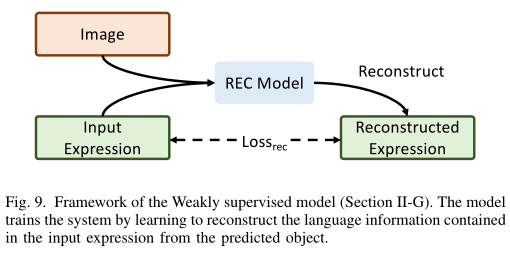
方法：
- Rohrbach et al. [41] 提出了 GroundR，它通过使用注意力机制重建给定的短语来学习grounding。在训练期间，GroundR 包含两个阶段。第一阶段的目标是在根据短语选择最相关的区域或潜在的多个区域，然后第二阶段尝试从它在第一阶段关注的区域中重建相同的短语。在测试时，GroundR 移除了短语重建阶段，仅使用第一部分进行grounding。不足的是，这一方法忽略了位置和上下文与参照对象的区分信息，无法区分一个特定类别的多个对象并列在一起的特定对象。
- 在GroundR的基础上，Chen et al. [42] 设计了一个知识辅助一致性网络（KAC Net），它重建了输入表达式和区域的信息。 KAC Net 由两个分支组成：视觉一致性分支和语言一致性分支。视觉一致性分支旨在预测和对齐与表达相关的区域的位置参数，语言一致性分支旨在从区域重构输入表达。为了利用来自视觉特征提取器的互补知识，使用基于知识的池化门来专注于视觉和语言重建。
- 与从一组候选区域中选择最佳区域不同，Zhao et al. [43] 提出了一种多尺度锚定变压器网络（MATN），它在没有边界框监督信息的情况下定位图像中的自由格式文本短语。 MATN 由一个多尺度对应网络和一个从一组候选区域诱导的锚约束组成。该模型是通过同时最小化单个图像中不同短语之间的对比度重建误差和具有相似短语的多个图像之间的一组三重损失来训练的。
- Liu et al. [44] 提出一个自适应重建网络（ARN），这一方法采用自适应接地和协同重建的方法建立图像建议和查询之间的对应关系。它由特征编码自适应接地和协同重建组成。具体来说，他们首先提取主题、位置和上下文特征来表示建议和查询。然后使用自适应grounding模块通过分层注意模型计算每个建议和查询之间的匹配分数。最后，基于注意力分数和提议特征，他们使用语言重建损失、自适应重建损失和属性分类损失的协同损失来重建输入查询。
优缺点
- 优点：GroundR 在 Flickr 30k Entities 和 ReferItGame 数据集比最先进的技术高 4.5% 和 10.6%。而 KAC Net 的准确率分别提高了 9.78% 和 5.13%。大量实验表明，MATN 在显着程度上优于最先进的弱监督短语定位方法。 ARN 的自适应机制有助于模型缓解不同引用表达之间的差异。量化分析的结果表明，该方法可以更好地处理同一类别的多个对象同时存在的问题。
- 缺点：本文未提及。
Datasets
ReferItGame
ReferItGame 包含 130,525 个表达式，涉及 19,894 张图像中的 96,654 个不同对象。
数据集的构建基于 ImageCLEF IAPR [69] 图像检索数据集，以及包含分割的 SAIAPR TC-12 [70] 扩展，其中包括将每个图像分割为多个区域。
该数据集是在一个两人游戏中收集的，其中第一个玩家根据指定的目标对象编写一个引用表达式。第二个玩家只显示图像和引用的表达，并要求点击所描述对象的正确位置。如果点击在目标对象区域，则两个玩家都获得游戏点数并交换下一个图像。如果点击不正确，他们将保持当前角色。然而，这个数据集中的图像有时只包含给定类别的一个对象，因此说话者倾向于使用简短的描述并关注上下文而不是对象。
RefCOCO & RefCOCO+
这些数据集是使用 ReferIt Game [59] 收集的。作者进一步收集了 MSCOCO [71] 图像上的 RefCOCO 和 RefCOCO+ 数据集。 RefCOCO 和 RefCOCO+ 数据集各包含 50,000个平均有 3 个引用表达式的引用对象。RefCOCO 和 RefCOCO+ 的主要区别在于，在 RefCOCO+ 中，不允许玩家使用位置词，因此将引用表达集中在纯粹基于外观的描述上。
RefCOCO 包含 19,994 张图像中 50,000 个对象的 142,209 个引用表达式，RefCOCO+ 包含 19,992 张图像中 49,856 个对象的 141,564 个表达式 [19]。数据集分为训练集、验证集、测试集 A 和测试集 B。测试集 A 包含多人，测试集 B 包含所有其他对象的多个实例。
RefCOCOg
数据集是在 Amazon Mechanical Turk 上收集的，与字幕相似，它们更长、更复杂，通常是整个句子而不是短语。
Mao et al. [18] 在非交互环境中构建 Mechanical Turk 任务，需要一组标注者为 MSCOCO 图像中的对象编写自然语言引用表达式，然后要求另一组标注者针对给定的引用表达式单击指定对象如果单击与正确的对象重叠，则将引用表达式视为有效并添加到数据集中。如果不是，则为该对象收集另一个引用表达式。此表达式生成和验证任务交互重复 3 次。
数据集包含 26,711 张图像中 54,822 个对象的 104,560 个表达式。平均每个物体有1.91个表情，每张图片有3.91个表情。 RefCOCO 表达式的平均长度为 3.61，而 RefCOCO+ 的平均长度为 3.53，RefCOCOg 的平均长度为 8.43 个单词。拆分为 85,474 和 9,536个用于训练和验证的expression-referent对。
Flickr 30k entities
该数据集用于短语定位，即给定图像和准确描述它的标题，预测该句子中特定实体提及的边界框。在 158,915 个 Flickr30k 字幕中中共有 513,644 个实体或场景提及（平均每个字幕 3.2 个），他们被链接到 244,035 个共同指代链（平均每个图像 7.7 个）。在 31,783 张图像中共有 275,775 个边界框（平均每张图像 8.7 个）。
注释过程包括两个主要阶段：共同引用决议，或形成引用相同实体的共同引用链，以及生成链的边界框注释。这一工作流程有两个优点：首先，识别共同引用提及有助于减少冗余并节省绘图工作；其次，共同参考注释具有内在价值，例如，用于训练交叉字幕（cross-caption）共同参考模型（co-reference model）。
GuessWhat?!
GuessWhat 数据集 [61] 是一个合作的两人游戏，其中两个玩家都看到具有多个对象的丰富视觉场景的图片。一名玩家——神谕者——被随机分配到场景中的一个对象。另一个玩家——提问者——不知道这个对象，他们的目标是通过向神谕询问一系列是否的问题来定位该对象。
原始的数据集由 155,280 个对话组成，其中包含 66,537 个图像和 134,073 个对象的 821,889 个问题/答案对。答案分别为 52.2% 否、45.6% 是和 2.2% N/A。平均而言，每个对话有 5.2 个问题，每张图片有 2.3 个对话。对话总共包含 3,986,192 个单词的标记，由 11,465 个至少出现一次的不同单词和至少 3 次出现的 5,444 个单词组成。
CLEVR-Ref+
前面提到的数据集是针对复杂的真实图像中的 REC 问题收集的。然而，有证据表明这些数据集是有偏差的。简单地选择突出的前景对象将产生比随机猜测高得多的baseline。这让人对当前 REC 模型的真正能力产生怀疑。此外，这些数据集中没有中间推理过程的解释，因此它们的性能评估只能取决于最终预测（例如边界框），而不考虑 REC 模型的中间推理过程。
CLEVR-Ref+ 考虑了一种不同的情况，他们使用合成图像，其中对象被放置在 2D 平面上，并且在形状、颜色、大小和材料方面只有很少的选择。引用表达式也是使用精心设计的模板合成的，表达式可能非常复杂，需要很强的推理能力。与统一的采样策略一起，这种设计可以减轻数据集偏差并揭示模型的推理能力。CLEVR-Ref+ 在训练集中包含 70K 图像，在验证和测试集中包含 15K 图像，每张图像都与 10 个引用表达式相关联。
Cops-Ref
在一些当前流行的引用表达式数据集中，数据通常只描述对象的一些简单的独特属性，图像包含有限的分散注意力的信息，无法为评估模型的推理能力提供理想的测试平台。为了缓解这些问题，Cops-Ref [63] 采用了一种新颖的表达引擎来渲染各种推理逻辑，可以灵活地与丰富的视觉属性相结合，以生成具有不同成分的表情。此外，提出了一种新的测试设置，以更好地利用表达式中体现的完整推理链。 75299幅图像中共有148712个表情和1307885个区域。表达式的平均长度为 14.4，词汇量为 1,596。分别有 119,603/16,524/12,586 个表达式用于训练/验证/测试。
Embodied Referring Expression datasets
除了静态图像上的引用表达式数据集外，还有一些数据集将任务转移到了实体环境中。
- Touchdown-SDR 是一个使用真实视觉观察进行空间推理的数据集。智能体必须首先在真实的视觉城市环境中遵循导航指令，然后识别用自然语言描述的位置，并在目标位置找到隐藏的对象。与正常的指称表达任务不同，Touchdown-SDR 的目标是描述特定的位置，而不是区分它们。
- Refer360° 数据集中，指令是从场景的局部视场(FOV)的角度给出的，可以动态地改变视场以探索场景。该数据集的一个重要特征是，目标位置不是对象，而是场景中的任何点。数据集由17,137个指令序列组成(每个场景8.57个)，描述了来自SUN360数据集中2,000个全景场景的随机分布的目标位置。
- REVERIE 将视觉和语言导航以及参考表达识别结合到一项任务中。在逼真的 3D 环境中，系统被要求导航到目标位置并指出真实室内环境中的远程对象。该数据集由来自 86 座建筑物的 10,318 张全景图像组成，包含 4,140 个目标对象和 21,702 条指令。
Evaluation Measures
评估是通过计算引用表达式的真实边界框和顶部预测框之间的交并比 (IoU) 来执行的。如果 IoU 大于 0.5，则认为预测为真阳性。否则，我们将其视为fp。然后将所有引用表达式的分数取平均。
Results of existing methods
监督方法在 ReferItGame 数据集上的表现明显优于弱监督方法。从 Flickr 30k 实体数据集（在表 VI 中）和 Cops-Ref 数据集（在表 VII 中）的结果也可以得出类似的结论。然而，弱监督方法可能更实用，因为大规模完全注释的引用表达数据集成本高昂。
对于有监督的方法，可以看到，在最流行的数据集 RefCOCO 和 RefCOCO+ 上，基于预训练的方法 [39]、[40] 始终产生最好的性能并远超过其他方法。这表明，在大规模的视觉和语言数据集上进行预训练确实可以提高学习到的联合视觉和语言表征的泛化能力。
其他一些方法，如基于注意力的方法 [30]、[31]、基于图的方法 [34]、[36] 或基于模块化的方法 [28]、[32]，其性能明显优于大多数遵循CNN/LSTM 或联合嵌入框架。这证明了注意力机制（通常是图注意力、模块化注意力）在挖掘多模态信息的特征关系方面的有效性。
这些方法在人工标记的对象建议上的性能明显高于检测到的对象建议的性能。这表明检测到的目标提议引入的噪声信息严重阻碍了性能。从其他数据集的结果中可以得出类似的结论。
另一方面，一些单阶段方法[16]、[17]虽然速度快得多，但由于使用了先进的骨干模型、精心设计的学习方案和标签分配策略，并且可能还使用了额外的注释[16]，因此仍然比许多复杂的基于注意力或基于模块的两阶段方法具有竞争力。
DISCUSSION AND FUTURE DIRECTIONS
REC仍然存在挑战，因为需要对视觉和文本信息进行联合推理。
当前存在如下缺陷
- 缺乏可解释性。本文提及的方法大多数属于两阶段方法，很多研究专注于联合嵌入方法上。该联合嵌入模型隐式融合了表达式和候选对象，然后选择最匹配的对象。因此，文本和视觉内容的匹配过程更像是一个黑匣子，推理过程无法可视化。虽然使用了注意机制，但它只显示了对决策过程更重要的参与区域。如何形象化和解释REC过程中的推理步骤仍然是一个挑战。
- 难以评估中间结果。在评价过程中，系统只能对最终的预测进行评价，而不会对中间的分步推理过程进行评价，不利于可解释模型的开发。许多模型倾向于给出直接的答案，而不需要中间的推理过程。因此，人们很难对模型的推理能力进行评估，也很难分析模型的缺陷。
- 存在严重的数据集偏差问题。在数据选择和注解过程中，许多表达式直接用属性描述所指对象。这种不平衡使得模型只能学习浅层的关联，而不能实现图文的联合理解。
- Cirik et al. [73] 指出REC模型可以在没有推理的情况下在图像中定位目标，仅依赖于通过一些隐含的线索来记忆目标，例如由意外偏差引入的浅层相关性。此外，REC 模型可能会忽略表达式，也可以胜过仅使用图像信息的随机猜测。这些模型无法真正理解视觉和语言信息，不适用于实际场景。这种数据集偏差问题在视觉和语言任务中很常见。例如，在视觉问答任务中，模型严重依赖问答之间的表面相关性，仅根据文本统计相关性预测答案，而不了解视觉内容。
是否到达了性能瓶颈
- 当前的REC方法更依赖于对对象的属性和关系的识别。而事实是现有的数据集包含有限数量的属性。因此，REC技术在这些有限的数据集上取得了良好的性能。也就是说，设计更复杂的模型并不能产生更多的性能增益，也不需要在有限的数据集上进行更复杂的推理过程。基于图的模型就是例子。尽管引入了更全面的关系编码，但他们没有观察到现有引用表达式数据集的显著改进。
在这项任务中，下一个技术上的大飞跃可能是什么？
-
基于图和基于模块的方法在一定程度上实现了推理的可解释性，语言预训练方法建立了视觉和文本概念的对应关系。未来的方向将集中在如何将语言训练前的训练与REC任务中的可解释性结合起来。
-
本文作者相信仍有潜力更好地利用推理链的概念来解决引用表达方面的挑战。
-
推理链是指问题解决过程中的逻辑推理步骤。正如人们在推理过程中会遵循一定的规则顺序一样，推理链旨在从空间和语义两个角度考虑指称表达理解任务。例如，对于“绿色包右边的人”这个表达，一个合理的推理过程应该是找到图像中的所有包，识别出绿色的那个，然后定位到它右边的那个人。
-
当前已经提出了一些需要 REC 模型进行推理的数据集。Liu et al. 提出 CLEVR-Ref+ [62]，它包含渲染图像和自动生成的表情，图像中的对象是具有属性的简单 3D 形状。如图 10 所示，REC 系统只需两个步骤即可在 RefCOCO [59] 数据集中定位目标对象。在 CLEVR-Ref+ [62] 数据集上，系统需要多个推理步骤。
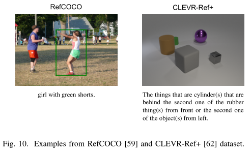
-
Chen et al. 提出Cops-Ref [63]，涵盖了多种可以灵活组合的推理逻辑并具有丰富的视觉属性。他们在这个新数据集上评估了最先进的 REC 模型，并观察到与在传统引用表达式数据集上取得的卓越性能相比，模型的性能在这个数据集上有显著的下降。这表明大多数模型可能只学习到了数据集的偏置，而不是推理。 REC 系统仍然要求一个长且语义丰富的表达式来帮助评估模型的推理能力。开发具有“真正”推理能力的 REC 模型将是下一个挑战。
-
Conclusion
本文回顾了REC的最新技术，首先回顾了将参考描述和图像区域嵌入到公共特征空间的最流行的方法，然后描述了基于它的更先进的基于模块化和基于图形的模型，以及one-stage和预训练模型等方法。根据数据集、主干模型、设置对结果进行分组，进行公平的比较。最后建议在引用表达式中考虑复杂的组合推理让模型进行学习，以作用于更多的视觉语言任务。
论文中的表格
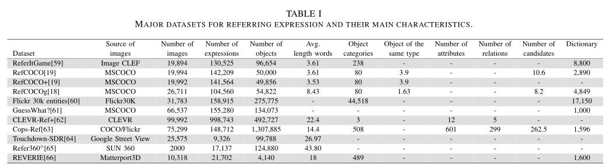
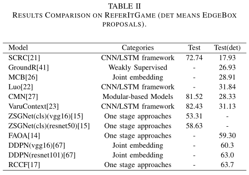
ReferitGame上的弱监督学习结果
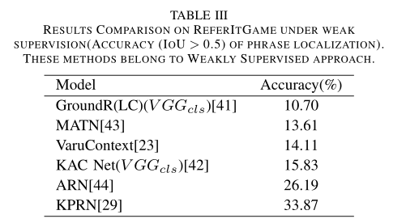
RefCOCO/+/g上各个模型的准确率（top-1 acc）（TranVG论文中的数据用的是TABLE V里面的）
当使用了真实边界框（人工标注）的时候
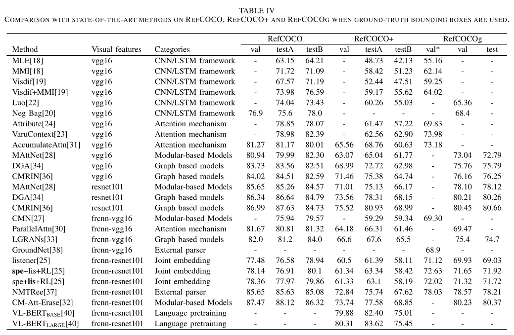
当使用了检测到的物体（模型检测）的时候
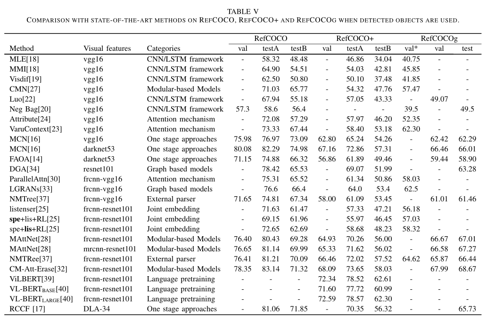
FLICKR30K实体集上的结果
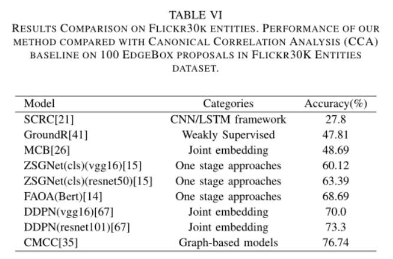
COPS-REF上的结果
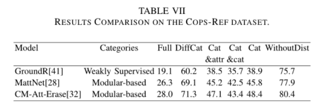